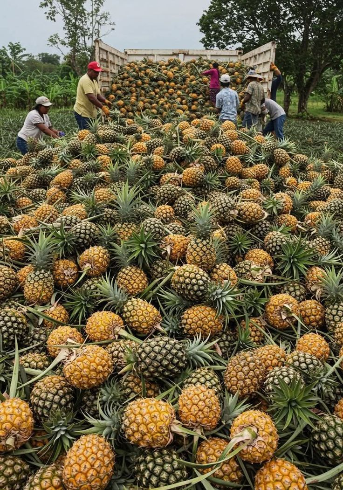

Coopérative Les Jardins de l'Estuaire
Spécialité : Goyave
32 femmes productrices basées à Kango. Elles cultivent la goyave sans pesticides depuis 2018. Récolte manuelle pour préserver la qualité du fruit.

Coopérative Soleil d'Ogooué
Spécialité : Ananas
Située à Lambaréné, cette coopérative familiale cultive l'ananas "Pain de sucre". Méthode traditionnelle et séchage naturel pour un goût intense.

Coopérative Mang'Or
Spécialité : Mangue
Producteurs de mangues Kent et Keitt dans la région de Bitam. Engagement bio et circuit court. Chaque mangue est sélectionnée une par une.

Coopérative Fraîcheur des Plateaux
Spécialité : Fraise
Jeunes agriculteurs de Franceville qui ont lancé la culture de la fraise en altitude. Serres naturelles pour un fruit sucré toute l'année.